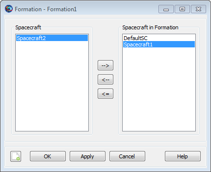

Formation — A collection of spacecraft.
A Formation resource allows you to combine spacecraft in a “container” object and then GMAT’s propagation subsystem will model the collection of spacecraft as a coupled dynamic system. You can only propagate Formation resources using numerical-integrator type propagators. This resource cannot be modified in the Mission Sequence.
| Field | Description | ||||||||||||
|---|---|---|---|---|---|---|---|---|---|---|---|---|---|
| Add | Adds a list of Spacecraft to the Formation. The list cannot be empty.
|
To create a simple Formation and configure its Spacecraft, in the Resource Tree:
Right-click the Spacecraft folder and select Add Spacecraft.
Right click the Formations folder and select Add Formation.
Double-click Formation1 to open its dialog box.
Click the right-arrow button twice to add DefaultSC and Spacecraft1 to Formation1.
Click Ok.
|  |
A Spacecraft can only be added to one Formation.
A Formation is a container object that allows you to model a group of Spacecraft as a coupled system. You can add Spacecraft to a Formation using the Add field as shown in the script examples below or in the GUI example above. The primary reasons to use a Formation Resource are (1) to simplify the propagation of multiple spacecraft and (2) for performance reasons. You can only add a spacecraft to a one formation, and you cannot add a formation to a formation. GMAT’s propagation subsystem models Formations as a coupled dynamic system. Once spacecraft have been added to a Formation, you can easily propagate all of the spacecraft by simply including the formation in the Propagate command statement like this:
Propagate aPropagator(aFormation) {aSat1.ElapsedSecs = 12000.0}You can only propagate Formation resources using numerical-integrator type propagators. GMAT does not support propagation of the orbit state transition matrix when propagating formations.
When propagating a Formation, all spacecraft in the Formation must have equivalent epochs. GMAT will allow you to separately propagate a Spacecraft that has been added to a Formation, like this:
aFormation.Add = {aSat1, aSat2}
Propagate aPropagator(aSat1) {aSat1.ElapsedSecs = 12000.0}However, when a Formation is propagated, if the epochs of all Spacecraft in the Formation are not equivalent to a tolerance of a few microseconds, GMAT will throw an error and execution will stop.
If you want to set unique colors on spacecraft trajectories that are nested in the Formation resource, then change colors through either the Spacecraft resource or the Propagate command. See the Color documentation for discussion and examples on how to set unique colors on Spacecraft resource and Propagate command.